Home: Bagger User Guide: Bag-Info
Editing
The contents of the ‘bag-info.txt’ tag file can be manipulated in Bagger using input forms that allow you add, remove and edit the fields that are to be included when the ‘bag-info.txt’ file is written to disk. These values can be stored to your local disk and reloaded for future use in other bags. They can also be associated with a specific bag project that requires the presence of specific values in the ‘bag-info.txt’ file to identify the bag with a project and project rules. This will be discussed further in the section ’Project profiles’.
- * For an existing BagInfo, all fields are displayed.
- * When displaying a field, the user is provided with the name of the field and the value of the field. Except as noted elsewhere, the user can edit the value.
- * Some fields may have larger values (and hence require large edit boxes).
- * Users may add additional fields. The User may select from the list of standard fields or provide his own field name.
- * Users may delete fields, exccept as noted elsewhere.
- * An empty field should not be added to BagInfo.
- * Changes to BagInfo are written to disk when the bag is saved.
- * Payload-Oxum cannot be edited, but can be deleted.
- * Bagging-Date is provided by default, but can be edited and deleted.
Here are some excerpts from the BagIt specification regarding BagInfo elements: The ‘bag-info.txt’ file is a tag file that contains metadata elements describing the bag and the payload. The metadata elements contained in the ‘bag-info.txt’ file are intended primarily for human readability. All metadata elements are optional.
Reserved metadata element names are case-insensitive and defined as follows.
- External-Description
- Bagging-Date
- External-Identifier
- Bag-Size
- Payload-Oxum
- Bag-Group-Identifier
- Bag-Count
- Internal-Sender-Identifier
- Internal-Sender-Description
A brief explanation of the contents and provenance.
Date (YYYY-MM-DD) that the content was prepared for delivery.
A sender-supplied identifier for the bag.
Size or approximate size of the bag being transferred, followed by an abbreviation such as MB (megabytes), GB, or TB; for example, 42600 MB, 42.6 GB, or .043 TB. Compared to Payload-Oxum (described next), Bag-Size is intended for human consumption.
The ‘octetstream sum’ of the payload, namely, a two-part number of the form ‘OctetCount.StreamCount’, where OctetCount is the total number of octets (8-bit bytes) across all payload file content and StreamCount is the total number of payload files. Compared to Bag-Size (described above), Payload-Oxum is intended for machine consumption.
A sender-supplied identifier for the set, if any, of bags to which it logically belongs. This identifier must be unique across the sender's content, and if recognizable as belonging to a globally unique scheme, the receiver should make an effort to honor reference to it.
In addition to these metadata elements, other arbitrary metadata elements may also be present.
To help you manage the contents of the ‘bag-info.txt’ file, Bagger provides two tabbed frames called ’Other Bag-Info’ and ‘Bag-Info Contact’.
Other Bag-Info
By default a newly created bag which has no project profile selected will contain no fields in the ‘Other Bag-Info’ tab. When an existing bag is loaded, the ‘Other Bag-Info’ tab will be populated with all the non-contact related fields contained in that bag’s ‘bag-info.txt’ tag file.
Note: Fields with no value will not be saved to ‘bag-info.txt’ or loaded into Bagger.

At the top of this form are these two buttons:
- ‘Add Field’: disabled until a bag is opened
- ‘Add All BagIt Fields’: disabled until a bag is opened
Allows the user to add additional fields.
Allows the user to add all of the standard fields at once.
Add Field
Selecting the ‘Add Field’ button displays the ‘Add Field Dialog’. This allows the user to select from the list of standard fields or provide a newly created field name of the user’s choice.
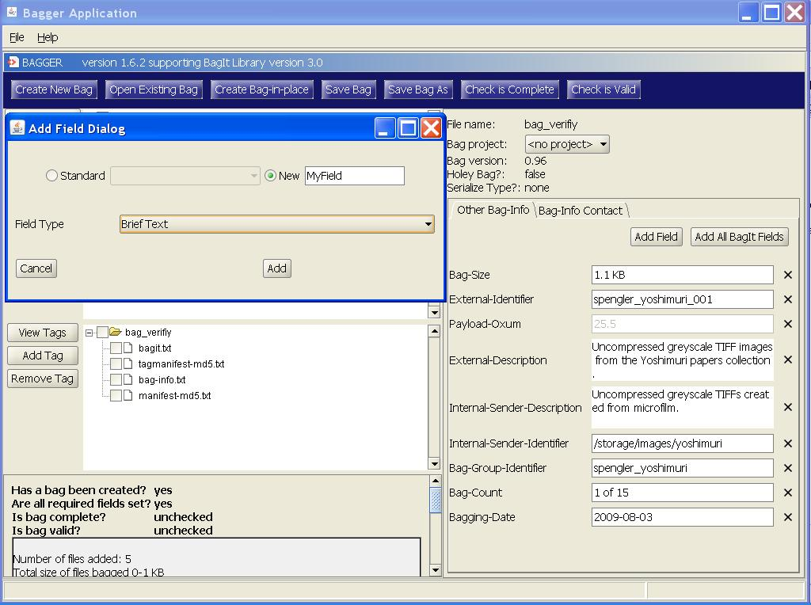
The ‘Field Type’ specified whether the field has larger values (and hence require large edit boxes) by selecting ‘Extended Text’. Otherwise use the default value of ‘Brief Text’. The other options on the field pertain to project profile rules. See the section Project profiles to learn how to use these options.
Add Field - Standard
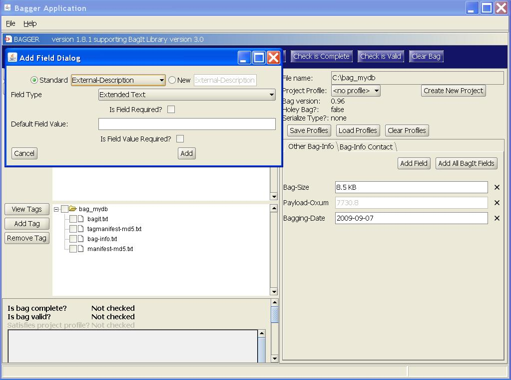
To add a standard field select the ‘Standard’ checkbox option, and then choose from one of the standard options shown in the pull-down menu. A standard field will automatically set the appropriate ‘Field Type’. Select the Add button to add the field to the ‘Other Bag-Info’ view.
The field is displayed with the name and value. If the value cannot be edited the value input box will be disabled. For non-required fields, the user may delete the field by selecting the  button at the end of the field row. Required fields will also display an R after the field name.
button at the end of the field row. Required fields will also display an R after the field name.
Add Field - New
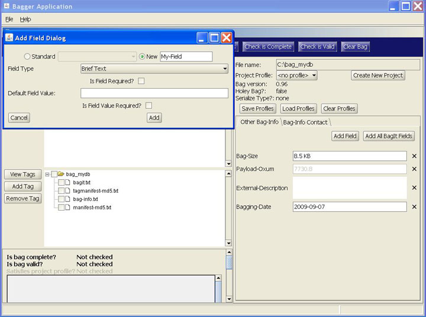
To add a new field, select the ‘New’ checkbox option. The new field text box will become enabled. Enter a name for your field, and then select the Add button to add the field to the ‘Other Bag-Info’ view.

To demonstrate how Bagger saves only fields with values, enter a value in one of the added fields but not the other. Now save the bag as previously described.

After selecting Ok from the ‘Bag saved’ confirmation dialog, notice that the field with a value is present but the field without a value has been omitted.

Remove Field
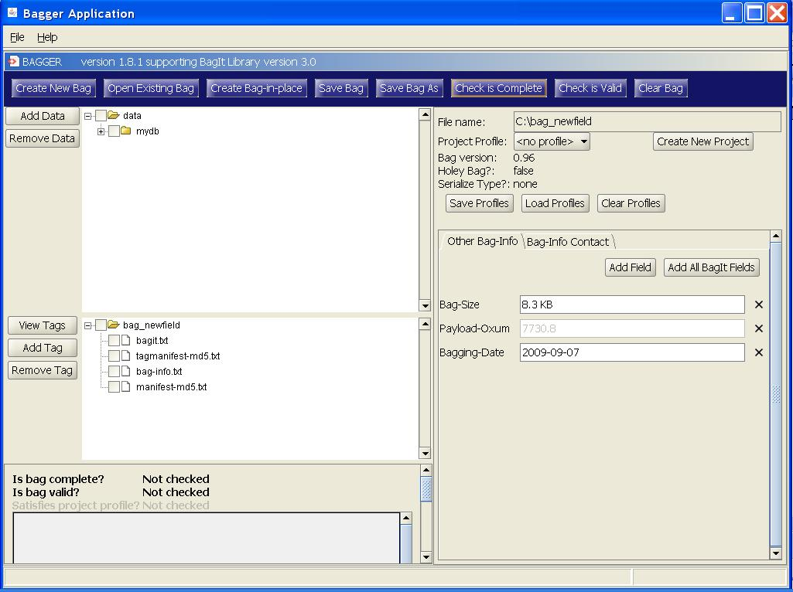
To remove a field, select the button adjacent to the field you wish to be removed. The field row is now deleted from the ‘Other Bag-Info’ panel and will not be saved to the ‘bag-info.txt’ tag file.
Add All BagIt Fields
Selecting the ‘Add All BagIt Fields’ button automatically adds the entire list of standard fields to the ‘Other Bag-Info’ form.

Bag-Info Contact
By default a newly created bag which has no project profile selected will contain no fields in the ‘Bag-Info Contact’ tab. When an existing bag is loaded, the ‘Bag-Info Contact’ tab will be populated with all the contact fields contained in that bag’s ‘bag-info.txt’ tag file.
Note: If a project profile exists and has been loaded, the contact fields stored for that profile will be displayed unless an existing bag is opened. In that case the profile fields will be replaced with the field values from the existing bag.
- Send from Organization includes these reserved bag elements:
- * Source-Organization
- * Organization-Address
- Send from Contact includes these reserved bag elements:
- * Contact-Name
- * Contact-Phone
- * Contact-Email
- Send to Contact is not yet written to ‘bag-info.txt’ file and is only stored in Bagger. It includes the elements:
- * Contact-Name
- * Contact-Phone
- * Contact-Email
Here are some excerpts from the BagIt specification regarding contact BagInfo elements:
Reserved metadata element names are case-insensitive and defined as follows.
- Source-Organization
- Organization-Address
- Contact-Name
- Contact-Phone
- Contact-Email
Organization transferring the content.
Mailing address of the organization.
Person at the source organization who is responsible for the content transfer.
International format telephone number of person or position responsible.
Fully qualified email address of person or position responsible.

The ‘Send to Contact’ fields provide information about the destination contact individual this bag will be sent to. This will not be included in the ‘bag-info.txt’ metadata file as part of the bag, however, if desired this can be included in a later release of Bagger. See the BagIt specification for more details regarding ‘bag-info.txt’.
Project profiles
The project profile concept is a way to associate a collection of fields and field values with a bag via a standard project or a project of the user’s creation. These values are stored in the ‘bag-info.txt’ tag file and are identified as a project profile by the LC-Project field. The default Project profile of a newly created bag is
- * Users may select a Project profile. A profile specifies the value of the LC-Project field and one or more:
- - Required fields
- - Required field with required values
- - Default field values
- * Required fields should be displayed for the user to provide a value. The user should not be able to remove required fields.
- * Required fields with required values should be displayed for the user. The user should not be able to remove required fields or change their values.
- * Fields with default values should be displayed for the user. The user should be able to remove fields with default values and change their values.
- * By default a bag has no Project profile. When loading an existing bag, if the BagInfo contains a recognized LC-Project field, a Project profile is automatically selected.
- * Satisfying a project profile is not required to save a bag.
- * Users may add new Project profiles or modify existing profiles.
- * LC-Project is a required field with required values.
Above the ‘Other Bag-Info’ and ‘Bag-Info Contact’ panels are a set of buttons for managing project profiles.
- Create New Project: creates a new project to which fields can be added with profile specific rules.
- Save Profiles: stores all fields, field values and field properties for the project profiles.
- Load Profiles: loads all fields, field values and field properties for the project profiles.
- Clear Profiles: removes all fields from the project profiles that have been loaded.
Create New Project
A list of project profiles is displayed in the bag ‘Project profile’ field below the bag ‘File name’ field. By default this list contains only the standard Bagger projects which are currently: eDeposit, ndiipp, and ndnp.
To create a new project, simply select the ‘Create New Project’ button.
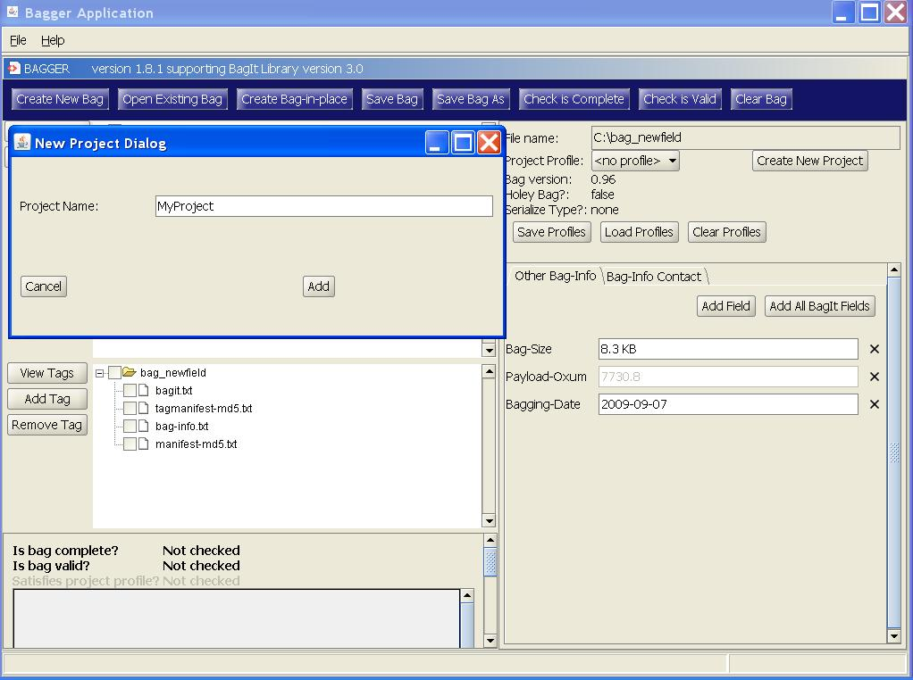
There is only one field necessary for a new project and that is the ‘Project Name’ field. Enter a name and then select the Add button.

Once the new project is created, the ‘Project Profile’ is set to be the new project. In addition, a new field is created and added to the project profile. The field ‘LC-Project’ is saved in the ‘bag-info.txt’ file in order to identify a project profile with the bag. It is a required field that contains the required value equivalent to the project name. It also cannot be modified or removed for this project profile.
Project profile - Add Field
Select the ‘Add Field’ button to add an additional field to this project profile. The ‘Add Field Dialog’ is displayed, and now all the field options become relevant.
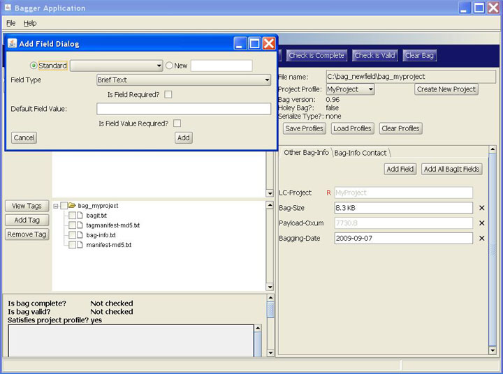
These ‘Add Field Dialog’ options are associated only with the current project profile:
- ‘Is Field Required?’: requires that this field exists for this project profile and it cannot be removed from the ‘Other Bag-Info’ form.
- ‘Default Field Value’: sets the default value that will be stored for this field in this project profile. This value will be stored for this field in this project profile. When this project profile is reloaded, this field will retain the default value.
- ‘Is Field Value Required?’: requires that this field’s value be retained. It becomes the default value and cannot be changed for this project profile. The field is added to the ‘Other Bag-Info’ form with the value disabled. It can, however, be removed unless the field is required
Note: The field properties for the ‘Other Bag-Info’ form can be edited by double-clicking on the field name.
In this example, select the ‘Is Field Required?’ checkbox and select Add.

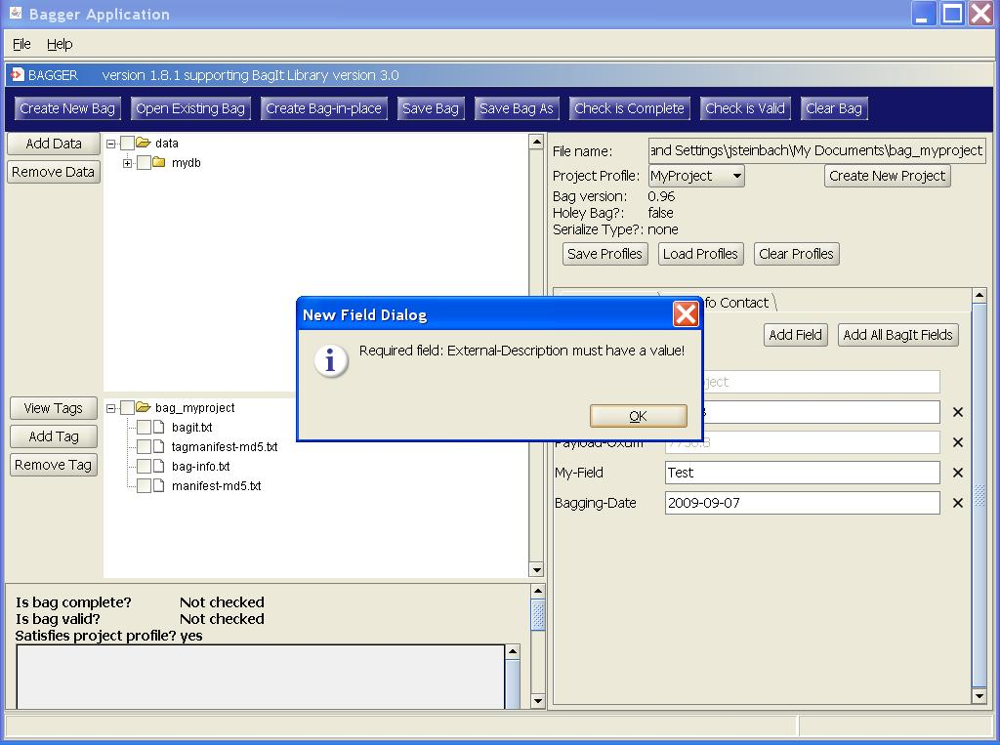
A required field also requires a value. So an error message dialog appears. Select Ok and this time enter a ‘Default Field Value’ and then select the Add button.
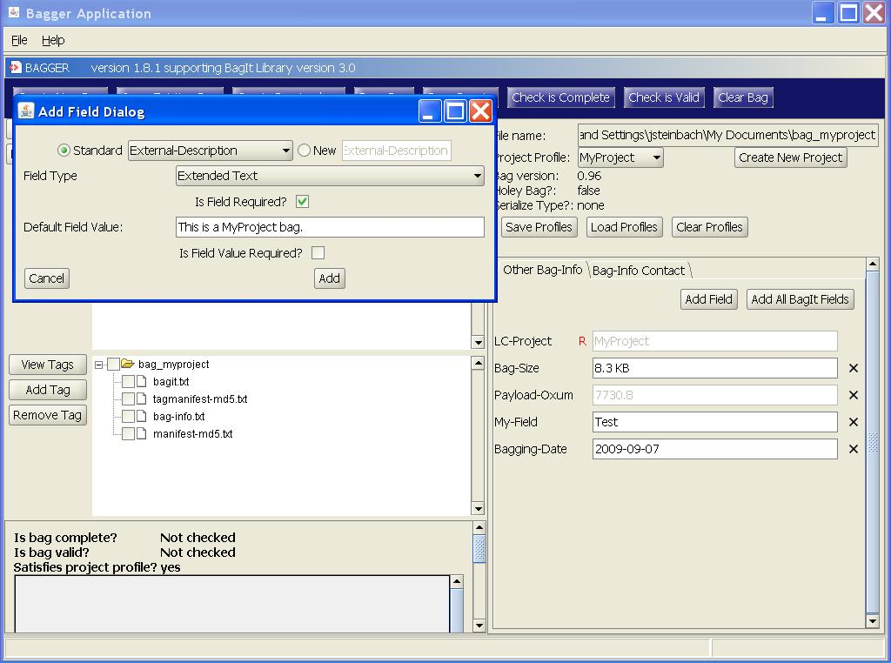

The new required field appears with a value set. This field cannot be removed; however, the value can be changed. It will be stored in the Bagger database with the default value. When the profile is reloaded it will contain the default value.
In this example, enter a value into the ‘Default Field Value’ and select Add.
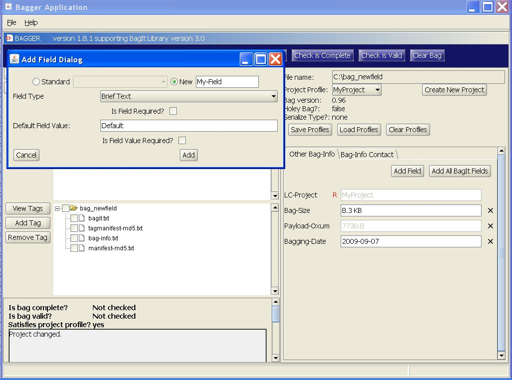
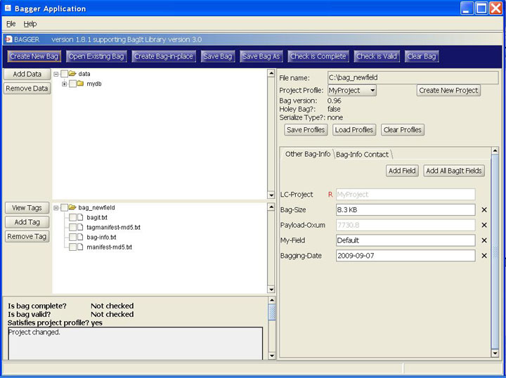
The new field appears with the default value set. This field value can be changed, but it will be stored in the Bagger database with the default value. When the profile is reloaded it will contain the default value. However, the value that is assigned to the field in the ‘Other Bag-Info’ form will be the value that is saved to the ‘bag-info.txt’ tag file.
In this example, select the ‘Is Field Value Required?’ checkbox and select Add.
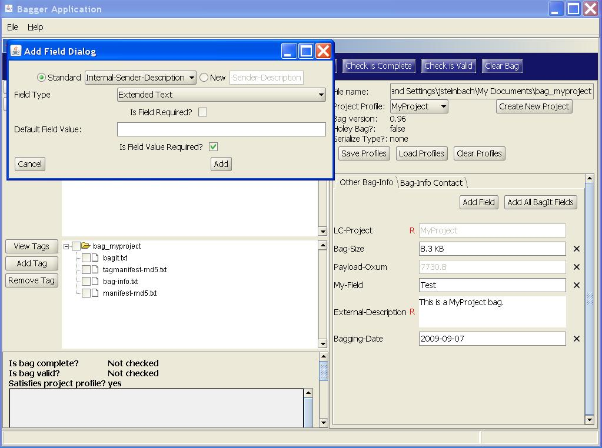
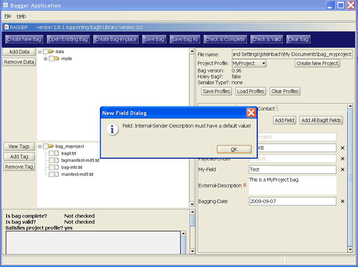
A required field value also requires a default value. So an error message dialog appears. Select Ok and this time enter a ‘Default Field Value’ and then select the Add button.

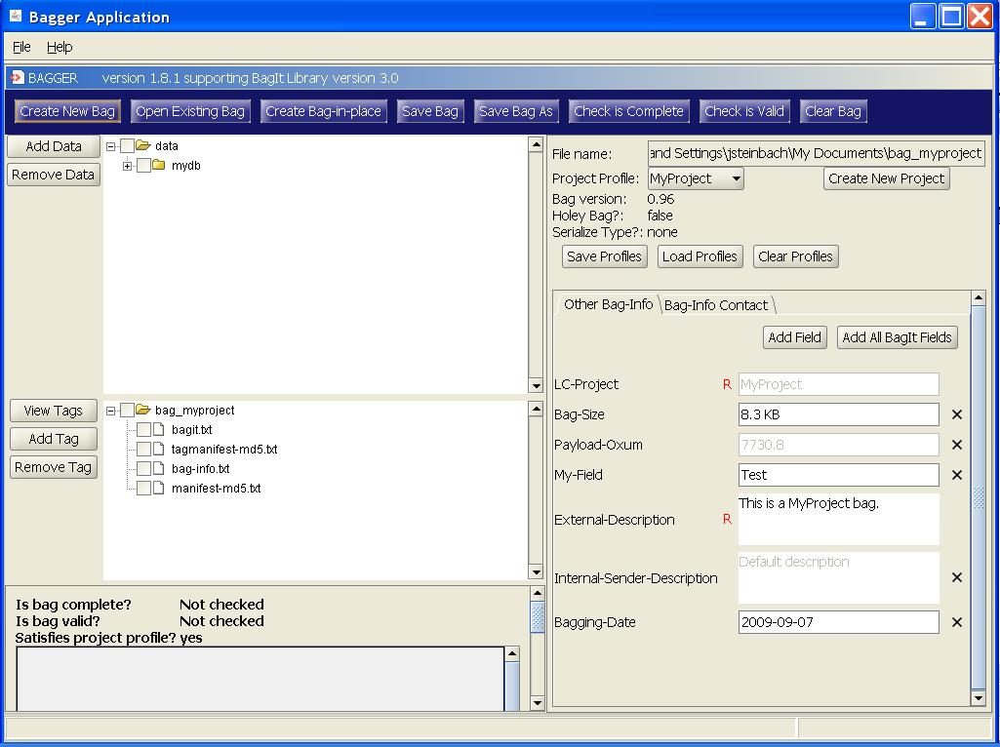
The new required field value appears with a value set. This field can be removed, and this field’s value cannot be changed so it is disabled. It will be stored in the Bagger database with the default value. When the profile is reloaded it will contain the default value.

Now save the bag as described previously. The ‘bag-info.txt’ file contains the ‘LC-Project’ field with the default required value ‘MyProject’. This allows Bagger to determine that the bag belongs to the ‘MyProject’ project and sets the ‘Project Profile’ field accordingly. The added field properties are determined by the project profile still in memory, not by the ‘bag-info.txt’ file contents.
Change Project Profile
By selecting a different project profile, that project’s profile fields will be displayed. If no profile has been created the form input fields will be blank and the user enters the values as described previously.

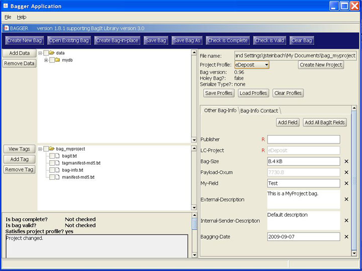
The Project profile is now set to the ‘eDeposit’ project. First, notice that the ‘LC-Project’ field has been replaced with the ‘eDeposit’ project value. Also, notice that the ‘eDeposit’ project requires a Publisher field to have a value. The field properties can be edited by double-clicking on the field name.
Save Profiles
In order to store the project profiles for future use, select the ‘Save Profiles’ button.
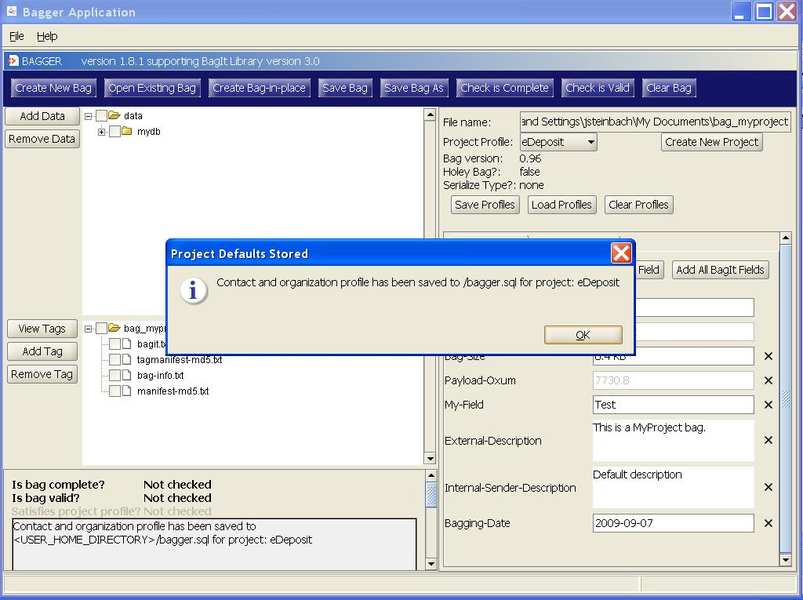
When stored, the Bagger application creates a bagger.sql file in the home directory path of the environment the current user is logged into. Each operating system has a home directory designation, e.g. here are just a few examples:
- C:\users\
- C:\Documents and Settings\
- /home/
- /usr/
- /var/users/
Load Profiles
Once you have exited the Bagger application, all the ‘Project profiles’ that were in memory are discarded. When the application is restarted only the default ‘Project profiles’ exist.
In order to restore the project profiles select the ‘Load Profiles’ button.

When the Bagger Application starts it looks for a ‘bagger.sql’ file in the user home directory. If it finds one it will prompt the user with the message:
‘Saved profiles have been detected. Would you like to load them?
If the user selects the Yes button the ‘Project profiles’ will be loaded, otherwise the No button will not load any stored profiles.
Once the ‘Project profiles’ have been loaded, you can select the profile you created previously.


Clear Profiles
Selecting the ‘Clear Profiles’ button will remove any Project Profiles previously loaded, except for the standard projects.